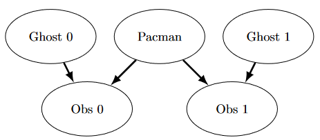

Lab5 - Ghostbusters
Fecha de entrega: sabado, 6 de junio, 11:55 PM PT

Puedo escucharte, fantasma.
Correr no te salvará de mi
¡Filtro de partículas!
Tabla de Contenidos
Archivos necesarios
En este laboratorio, debes descargar los archivos base desde este link.
Introducción
Pacman pasa su vida huyendo de los fantasmas, pero las cosas no siempre fueron así. La leyenda dice que hace muchos años, el bisabuelo de Pacman, Grandpac, aprendió a cazar fantasmas por deporte. Sin embargo, fue cegado por su poder y solo podía rastrear a los fantasmas por sus ruidos y estruendos.
En este proyecto, diseñarás agentes Pacman que usan sensores para localizar y comer fantasmas invisibles. Avanzarás desde la localización de fantasmas individuales estacionarios hasta la caza de grupos de múltiples fantasmas en movimiento con eficiencia implacable.
Este proyecto incluye un autograder para que califiques tus respuestas en tu máquina. Se puede ejecutar en todas las preguntas con el comando:
python autograder.py
Se puede ejecutar para una pregunta particular, como q2, con:
python autograder.py -q q2
Se puede ejecutar para una prueba particular con comandos de la forma:
python autograder.py -t test_cases/q2/1-bridge-grid
Exploración de archivos
El código de este proyecto consiste en varios archivos de Python, algunos de los cuales deberás leer y entender para completar la tarea, y algunos de los cuales puedes ignorar.
Archivos que vas a editar
| Archivo | Descripción |
|---|---|
| bustersAgents.py | Agentes para jugar la variante Ghostbusters de Pacman. |
| inference.py | Código para rastrear fantasmas a lo largo del tiempo usando sus sonidos. |
| factorOperations.py | Operaciones para calcular nuevas tablas de probabilidad conjunta o marginalizada. |
Archivos que quizás quieras revisar
| Archivo | Descripción |
|---|---|
| bayesNet.py | Las clases BayesNet y Factor. |
Archivos de soporte que puedes ignorar
| Archivo | Descripción |
|---|---|
| busters.py | La entrada principal a Ghostbusters (reemplaza Pacman.py). |
| bustersGhostAgents.py | Nuevos agentes fantasma para Ghostbusters. |
| distanceCalculator.py | Calcula distancias en el laberinto, almacena los resultados en caché para evitar recalcularlos. |
| game.py | Funcionamiento interno y clases auxiliares para Pacman. |
| ghostAgents.py | Agentes para controlar los fantasmas. |
| graphicsDisplay.py | Gráficos para Pacman. |
| graphicsUtils.py | Soporte para los gráficos de Pacman. |
| keyboardAgents.py | Interfaces de teclado para controlar a Pacman. |
| layout.py | Código para leer archivos de diseño y almacenar su contenido. |
| util.py | Funciones de utilidad. |
Temas necesarios para este proyecto
- Probabilidad
- Representación de Redes de Bayes
- Inferencia en Redes de Bayes
- HMMs (Modelos Ocultos de Markov)
- Filtrado de Partículas
Ghostbusters y Redes de Bayes
En la versión CS 188 de Ghostbusters, el objetivo es cazar fantasmas asustados pero invisibles. Pacman, siempre ingenioso, está equipado con sonar (oídos) que proporciona lecturas ruidosas de la distancia de Manhattan a cada fantasma. El juego termina cuando Pacman ha comido a todos los fantasmas. Para comenzar, intenta jugar un juego tú mismo usando el teclado.
python busters.py
Los bloques de color indican dónde podría estar cada fantasma, dadas las lecturas de distancia ruidosas proporcionadas a Pacman. Las distancias ruidosas en la parte inferior de la pantalla son siempre no negativas y siempre están dentro de 7 de la distancia real. La probabilidad de una lectura de distancia disminuye exponencialmente con su diferencia respecto a la distancia real.
Tu tarea principal en este proyecto es implementar inferencia para rastrear a los fantasmas. Para el juego basado en teclado anterior, se implementó una forma rudimentaria de inferencia por defecto: todos los cuadrados en los que un fantasma podría estar se sombrean con el color del fantasma. Naturalmente, queremos una mejor estimación de la posición del fantasma. Afortunadamente, las Redes de Bayes nos proporcionan herramientas poderosas para aprovechar al máximo la información que tenemos. A lo largo del resto de este proyecto, implementarás algoritmos para realizar inferencia exacta y aproximada usando Redes de Bayes. El proyecto es desafiante, por lo que te animamos a comenzar temprano y buscar ayuda cuando sea necesario.
Mientras observas y depuras tu código con el autograder, será útil tener cierta comprensión de lo que hace el autograder. Hay 2 tipos de pruebas en este proyecto, diferenciados por sus archivos .test que se encuentran en los subdirectorios de la carpeta test_cases. Para pruebas de clase DoubleInferenceAgentTest, verás visualizaciones de las distribuciones de inferencia generadas por tu código, pero todas las acciones de Pacman se seleccionarán previamente según las acciones de la implementación del equipo docente. Esto es necesario para permitir la comparación de tus distribuciones con las del equipo. El segundo tipo de prueba es GameScoreTest, en el que tu BustersAgent seleccionará acciones para Pacman y observarás cómo tu Pacman juega y gana partidas.
Para este proyecto, es posible que el autograder se agote si se ejecutan las pruebas con gráficos. Para determinar con precisión si tu código es lo suficientemente eficiente, debes ejecutar las pruebas con la bandera --no-graphics. Si el autograder pasa con esta bandera, recibirás puntos completos, incluso si el autograder se agota con gráficos.
Redes de Bayes y Factores
Primero, revisa
bayesNet.py
para ver las clases con las que trabajarás: BayesNet y Factor. También puedes ejecutar este archivo para ver un ejemplo de BayesNet y Factores asociados:
python bayesNet.py.
Debes revisar la función
printStarterBayesNet
– hay comentarios útiles que pueden facilitarte el trabajo más adelante.
La Red de Bayes creada en esta función se muestra a continuación:
Raining –> Traffic <– Ballgame
A continuación se presenta un resumen de la terminología:
- Red de Bayes: Es una representación de un modelo probabilístico como un grafo acíclico dirigido y un conjunto de tablas de probabilidad condicional, una para cada variable, tal como se muestra en clase. La Red de Bayes de Tráfico anterior es un ejemplo.
- Factor: Almacena una tabla de probabilidades, aunque la suma de las entradas en la tabla no es necesariamente 1. Un factor tiene la forma general f(X₁,...,Xₘ,Y₁,...,Yₙ∣Z₁,...,Zₚ,w₁,...,wq). Recuerda que las variables en minúscula ya han sido asignadas. Para cada posible asignación de valores a las variables Xᵢ y Zⱼ, el factor almacena un único número. Las variables Zⱼ y wₖ se dicen condicionadas, mientras que las variables Xᵢ y Yₗ son no condicionadas.
- Tabla de Probabilidad Condicional (CPT): Es un factor que satisface dos propiedades: (1) Sus entradas deben sumar 1 para cada asignación de las variables condicionales. (2) Hay exactamente una variable no condicionada. La Red de Bayes de Tráfico almacena las siguientes CPTs: P(Raining), P(Ballgame), P(Traffic∣Ballgame, Raining).
Q1: Estructura de la Red de Bayes
Implementa la función
constructBayesNet
en inference.py. Construye una Red de Bayes vacía con la estructura descrita a continuación. Una Red de Bayes está incompleta sin las probabilidades reales, pero los factores son definidos y asignados por el código del equipo docente por separado; no necesitas preocuparte por eso. Si tienes curiosidad, puedes ver un ejemplo de cómo funciona en printStarterBayesNet en bayesNet.py. Leer esta función también puede ser útil para esta pregunta.
El mundo simplificado de caza de fantasmas se genera según la siguiente Red de Bayes:

No te preocupes si esto parece complicado. Lo abordaremos paso a paso. Como se describe en el código de constructBayesNet, construimos la estructura vacía listando todas las variables, sus valores y los bordes entre ellas. Esta figura muestra las variables y los bordes, ¿pero qué hay de sus dominios?
- Agrega variables y bordes basándote en el diagrama.
- Pacman y los dos fantasmas pueden estar en cualquier lugar del tablero (ignoramos las paredes para esto). Agrega todas las tuplas de posición posibles para estos.
- Las observaciones aquí son no negativas, iguales a las distancias de Manhattan de Pacman a los fantasmas ± ruido.
Calificación: Para probar y depurar tu código, ejecuta:
python autograder.py -q q1
Q2: Unión de Factores
Implementa la función
joinFactors
en factorOperations.py. Toma una lista de Factores y devuelve un nuevo Factor cuyas entradas de probabilidad son el producto de las filas correspondientes de los Factores de entrada.
joinFactors
se puede usar como la regla del producto; por ejemplo, si tenemos un factor de la forma P(X∣Y) y otro factor de la forma P(Y), entonces unir estos factores producirá P(X,Y). Por lo tanto, joinFactors nos permite incorporar probabilidades para variables condicionadas. Sin embargo, no debes asumir que joinFactors se llama con tablas de probabilidad — es posible llamarlo con Factores cuyas filas no suman 1.
Calificación: Para probar y depurar tu código, ejecuta:
python autograder.py -q q2
Puede ser útil ejecutar pruebas específicas durante la depuración, para ver solo un conjunto de factores impresos. Por ejemplo, para ejecutar solo la primera prueba:
python autograder.py -t test_cases/q2/1-product-rule
Sugerencias y Observaciones
- Tu
joinFactorsdebe devolver un nuevo Factor. - Algunos ejemplos de lo que
joinFactorspuede hacer:joinFactors(P(X∣Y), P(Y)) = P(X,Y)joinFactors(P(V,W∣X,Y,Z), P(X,Y∣Z)) = P(V,W,X,Y∣Z)joinFactors(P(X∣Y,Z), P(Y)) = P(X,Y∣Z)joinFactors(P(V∣W), P(X∣Y), P(Z)) = P(V,X,Z∣W,Y)
- Para una operación
joinFactorsgeneral, ¿qué variables no están condicionadas en el Factor devuelto? ¿Cuáles están condicionadas? - Los Factores almacenan un
variableDomainsDict, que mapea cada variable a una lista de valores que puede tomar (su dominio). Para este problema, puedes asumir que todos los Factores de entrada provienen de la misma BayesNet, por lo que susvariableDomainsDictsson todos iguales.
Q3: Eliminar (aún no fantasmas)
Implementa la función
eliminate
en factorOperations.py. Toma un Factor y una variable a eliminar y devuelve un nuevo Factor que no contiene esa variable. Esto corresponde a sumar todas las entradas del Factor que solo difieren en el valor de la variable que se está eliminando.
Calificación: Para probar y depurar tu código, ejecuta:
python autograder.py -q q3
Puede ser útil ejecutar pruebas específicas durante la depuración. Por ejemplo, para ejecutar solo la primera prueba:
python autograder.py -t test_cases/q3/1-simple-eliminate
Sugerencias y Observaciones
- Tu
eliminatedebe devolver un nuevo Factor. eliminatese puede usar para marginalizar variables de tablas de probabilidad. Por ejemplo:eliminate(P(X,Y∣Z), Y) = P(X∣Z)eliminate(P(X,Y∣Z), X) = P(Y∣Z)
- Para una operación
eliminategeneral, ¿qué variables no están condicionadas en el Factor devuelto? ¿Cuáles están condicionadas? - Recuerda que los Factores almacenan el
variableDomainsDictde la BayesNet original. Como resultado, el Factor devuelto debe tener el mismovariableDomainsDictque el Factor de entrada.
Q4: Eliminación de Variables
Implementa la función
inferenceByVariableElimination
en inference.py. Responde a una consulta probabilística, que se representa usando una BayesNet, una lista de variables de consulta y la evidencia.
Calificación: Para probar y depurar tu código, ejecuta:
python autograder.py -q q4
Puede ser útil ejecutar pruebas específicas durante la depuración. Por ejemplo, para ejecutar solo la primera prueba:
python autograder.py -t test_cases/q4/1-disconnected-eliminate
Sugerencias y Observaciones
- El algoritmo debe iterar sobre las variables ocultas en orden de eliminación, realizando la unión y eliminación de esa variable, hasta que solo queden las variables de consulta y evidencia.
- La suma de las probabilidades en tu factor de salida debe sumar 1.
-
Observa la función
inferenceByEnumerationeninference.pycomo ejemplo de cómo usar las funciones deseadas. - Deberás manejar el caso especial donde un factor unido solo tiene una variable no condicionada.
Q5a: Clase DiscreteDistribution
Desafortunadamente, tener pasos de tiempo hará que nuestro grafo crezca demasiado para que la eliminación de variables sea viable. En cambio, usaremos el Algoritmo de Avance para HMMs para inferencia exacta, y Filtrado de Partículas para inferencia más rápida pero aproximada.
Para el resto del proyecto, usaremos la clase
DiscreteDistribution
definida en inference.py para modelar distribuciones de creencia y de peso. Esta clase es una extensión del diccionario integrado de Python. Esta pregunta te pide completar las partes faltantes de esta clase, que serán cruciales para preguntas posteriores (aunque esta pregunta en sí no vale puntos).
Primero, completa el método
normalize
, que normaliza los valores en la distribución para que sumen uno, manteniendo las proporciones iguales. Para una distribución vacía o con todos valores en cero, no hagas nada. Ten en cuenta que este método modifica la distribución directamente.
Segundo, completa el método
sample
, que extrae una muestra de la distribución, donde la probabilidad de que se muestree una clave es proporcional a su valor correspondiente. Asume que la distribución no está vacía y que no todos los valores son cero. Puede ser útil la función random.random() de Python para esta pregunta.
Q5b: Probabilidad de Observación
En esta pregunta, implementarás el método
getObservationProb
en la clase base InferenceModule en inference.py. Este método devuelve la probabilidad de la lectura de distancia ruidosa dada la posición de Pacman y la posición del fantasma: P(noisyDistance∣pacmanPosition, ghostPosition).
El sensor de distancia tiene una distribución de probabilidad sobre las lecturas de distancia. Esta distribución está modelada por la función
busters.getObservationProbability(noisyDistance, trueDistance)
, que devuelve P(noisyDistance∣trueDistance) y se proporciona para ti. Debes usar la función manhattanDistance proporcionada para encontrar la distancia entre Pacman y el fantasma.
Sin embargo, también hay el caso especial de la cárcel que debes manejar. Cuando capturamos un fantasma y lo enviamos a la cárcel, nuestro sensor de distancia devuelve None de manera determinista. Si la posición del fantasma es la posición de la cárcel, la observación es None con probabilidad 1, y todo lo demás con probabilidad 0.
Calificación: Para probar tu código y ejecutar el autograder para esta pregunta:
python autograder.py -q q5
Entrega
El entregable será un archivo zip con el número de laboratorio seguido de tu ID (ejemplo: Lab5-20123456.zip) que contenga todos los archivos del laboratorio completados exitosamente. No olvides verificar que completaste el laboratorio correctamente usando la herramienta de autograder proporcionada para este laboratorio.